スマホをご利用の方
上記でもお伝えしている通り、「iPhone」の方は何も設定していない場合、標準で「Safari」が規定のブラウザになっているので読み飛ばしてください。「Android」の方は設定の見直しのためにも一度目を通してください。
手順１ ホーム画面の「設定」ボタンをタップします。
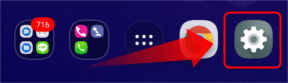
手順２ 「アプリ」を選択します。
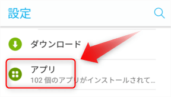
手順３ 「Chrome」を選択します。
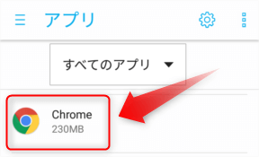
手順４ 「ブラウザアプリ」を選択します。
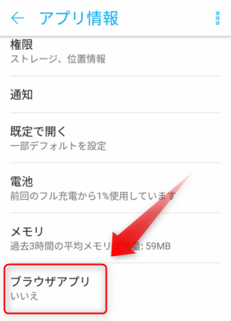
手順５ 再び「ブラウザアプリ」を選択します。
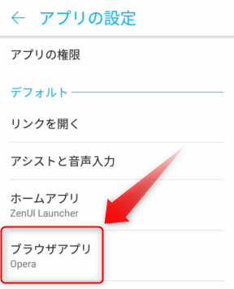
手順６ 「Chrome」を選択します。

手順７ 「ブラウザアプリ」が「Chrome」に変わったら規定のブラウザの設定は完了です。
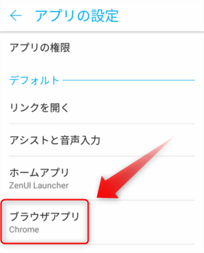
パソコンをご利用の方
手順１ 左下にある「ウィンドウズマーク」をクリックします。
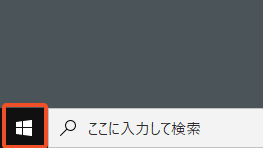
手順２ 歯車のマークの「設定」をクリックします。
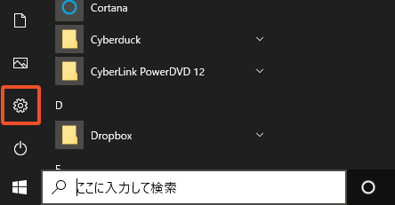
手順３ 「アプリ」を選択します。
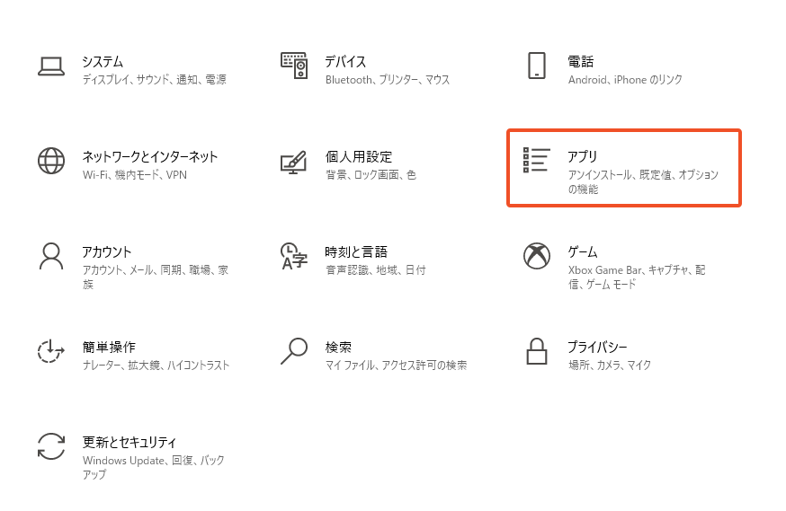
手順４ 左のメニューの「規定のアプリ」を選択します。
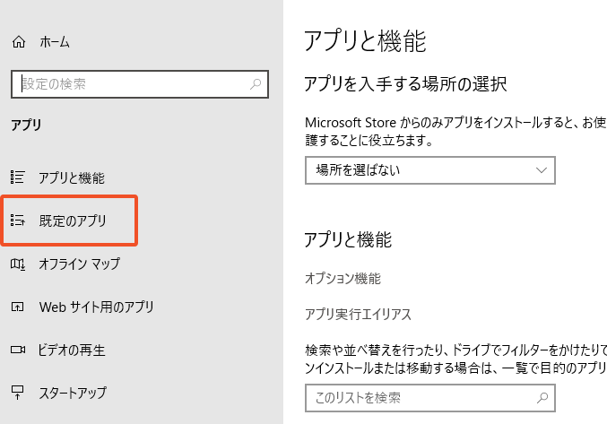
手順５ Web ブラウザーで「Google Chrome」を選択します（初期設定は Microsoft Edge です）
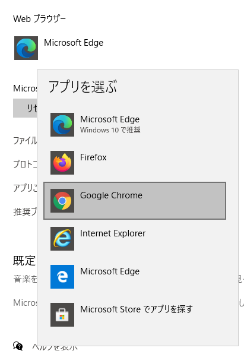
手順６ 表示が以下のようになったら設定完了です。
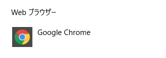